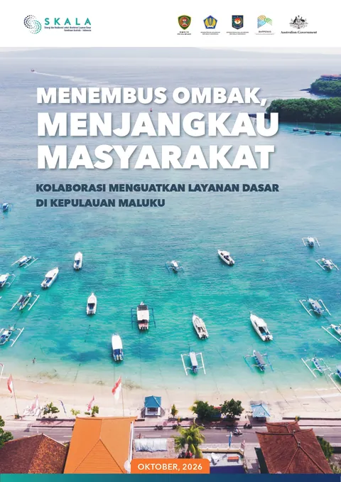
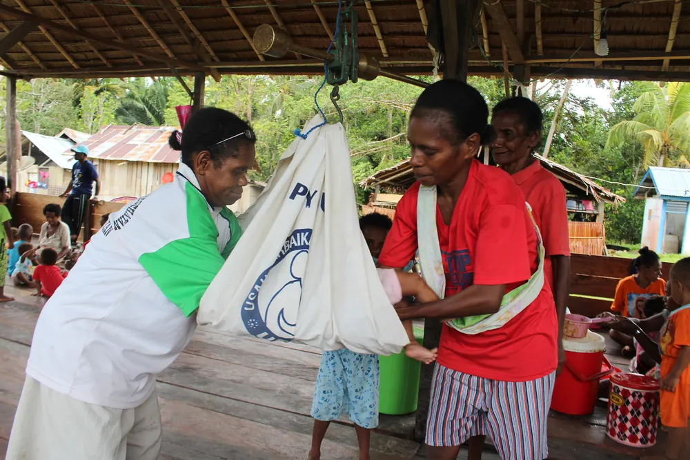

Tentang SKALA
Dampak
Fokus Kerja
Capaian Akhir
Kabar & Media
Program Kemitraan Australia–Indonesia bersama Kemendagri, Kemenkeu, dan Bappenas di 12 provinsi, dari Aceh hingga Papua.
Tentang Kami

SKALA bermitra dengan Kemendagri, Kemenkeu, dan Bappenas agar layanan dasar sampai ke warga miskin dan rentan di daerah tertinggal.
Kami memperkuat cara pemerintah merencanakan, menganggarkan, dan memantau layanan dasar, dari pusat hingga desa.
Wilayah Kerja
Sepuluh lokasi intervensi utama dan dua lokasi tambahan.
Berkat dukungan SKALA, portal Open Data Aceh yang ditargetkan dua tahun dapat rampung dalam enam bulan.
 Sayid AzharyKepala UPTD Statistik Diskominfo dan Sandi Aceh
Sayid AzharyKepala UPTD Statistik Diskominfo dan Sandi Aceh
Dengan bantuan SKALA, capaian SPM Provinsi NTT sudah mulai membaik.
 Kosmas Damianus LanaSekretaris Daerah Provinsi NTT
Kosmas Damianus LanaSekretaris Daerah Provinsi NTT
Pemanfaatan Satu Data Kaltara menjadi lebih sistematis dan efektif.
 Bertius, S.Hut. TPlt. Kepala Bappeda dan Litbang Kalimantan Utara
Bertius, S.Hut. TPlt. Kepala Bappeda dan Litbang Kalimantan Utara